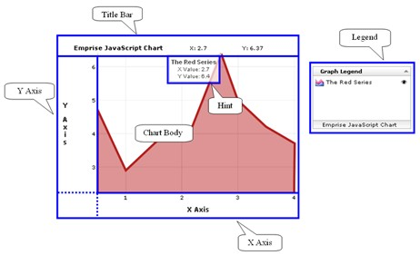

Customizing Your Chart
|
With Emprise JavaScript Charts, the customization options of your chart are endless. This includes visual appearance, which can be modified to integrate fully with any theme or design, as well as chart interactivity, which can range from including user capabilities such as auto zooming and custom hint captions to hidden-axis view only chart displays. Your chart can be customized on the chart and series level via the modification of the chart and series properties.
The first customization options available to you are at the chart level. They can be specified when creating the chart or alternatively after the chart object has been established. The properties available for editing and their syntax can be found in the Chart Properties section of the help documentation. In addition, examples of their implementation with sample code and the resulting effect on chart display or interactivity are available on the in the /examples/ directory of the distribution package. There are also additional examples available online at http://www.ejschart.com/examples/
The following are a few quick examples of modifying commonly used properties both at and after chart creation:
var chart = new EJSC.Chart("myChart", {x_axis_caption: "Month",
var chart = new EJSC.Chart("myChart"); chart.setXAxisCaption("Month");
The properties of each series on a chart may also be customized. This is accomplished with the editing of properties in the same way as was done to customize chart properties; either at the time of series creation or following creation. The properties available for editing and their syntax can be found on the Properties page of each of the different series help sections. In addition, examples of their implementation with sample code and the resulting effect on chart display or interactivity are available on the in the /examples/ directory of the distribution package. There are also additional examples available online at http://www.ejschart.com/examples/
The following are a few quick examples of modifying commonly used properties both at and after chart creation:
var myChartSeries = new EJSC.FunctionSeries(Math.sin, {lineWidth: 4});
var myChartSeries = new EJSC.FunctionSeries(Math.sin); myChartSeries.setLineWidth(4);
In order to fully understand the power of the properties available for customizing it is important to become familiar with the various components of the chart. The following diagram identify many of these components:
Anatomy of a Chart 
|